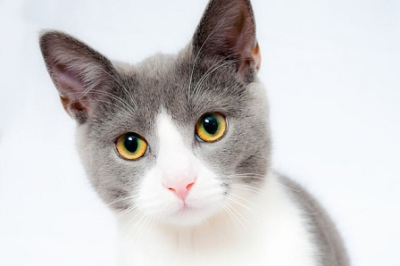

Seriously, you guys think that a fucking website doesn't need some styling?
You probably build websites using vim and feeling hardcore. You think your 4.99KB motherfuckingwebsite(.com) is going to get you some fucking award to put on your damn footer as a link. You think your fucking default font is gonna make your website run even on a toaster.
WRONG, motherfucker.
The best kick-ass website
Let me describe the real perfect-ass website which still has the glory of the past motherfuckingwebsites:
Shit doesn't weigh a ton (in fact it's just 34.97 KB when the 27.83KB cat picture below is removed)
The page weighs exactly 63.02kB, 93.7% less than the Google home page
Fits on your iPhone 1st gen (although it doesn't work on your damn 16x32 Tamagotchi)
Looks almost the same on every screen
Every asshole that visits this website can use it without any problem
but not everyone can read this - this text is Ant-Accessible
Shit is even more legible than the fucking two previous versions - and it also has a cleanish style without looking like an ARPANET
Doesn't load massive images or scripts. We should all care about people who still use IPoAC
Uses only free and open resources. Like this ass-breaking font called "Open Sans"
which btw weighs 15.21kB, wtf
It doesn't load your glorious jQuery or jQueryUI with all their fucking styles and shits. Nor Angular or any other framework. This website is made with plain HTML, CSS3 and JS. Keep it Vanilla!
Doesn't include any tracking service
this website does, but hey, who cares
Images aren't forbidden, but when SVG is available JUST USE IT.
Use some fucking colors.
Links don't really need to keep that shitty blue the browser is giving them: nor that violetish color when they are font color="maroon"ed as visited. Just give them a nice color
Well guess what, motherfucker:
This website is even better than the last guy and the guy before him.
Why?
It's over a secure connection - so nobody can spy what we're serving to you (the page might be different for everyone, pshht!).
It uses one of the most general gTLDs available out there: .website
It uses the TLD, too: bestmotherfucking.website, check out domainr to do something cool too.
It uses the kickassing Let's Encrypt CA (don't you see the gorgeous green lock?)
It runs on nginx: the best fucking web server instead of Apache Server
It probably doesn't support all the web browsers, but that's the best thing - if the user's browser is outdated he will notice and maybe he will switch from the crap he uses to a much cooler browser
It uses some cool technologies like JavaScript JavaScript logo
, CSS3 CSS3 and HTML5 HTML5
We don't need to break our eyes while looking at a motherfuckingwebsite.
Size matters, yeah, but don't exaggerate
Remember, not everybody is blind, and not everybody wants to read a fucking 2 inches letter on a 27 inches screen, so keep it cool. Don't exaggerate in size, but don't make an ant-compatible text either.
Put some pictures

We're not looking at a novel by Stephanie Meyer, this is a motherfuckingwebsite so include some pictures to give a contexte
The website shouldn't be overfilled with pictures, but it should make the user happy while reading your nonsense words.
You see that fancy cat? He's happy, you should be too.
A nice and cute cat
A cat, just to keep the context of the website.
Yes, even this is satire.
But this doesn't mean you should load your motherfuckingwebsite with shitty animations, instead keep it simple, minify its resources and use images responsibly. Remember the IPoAC users!
Good design is as little design as possible.
- Some German motherfucker on motherfuckingwebsite.com
That's not entirely true, look at that motherfuckingwebsite. It's so minimal that it can be considered crap.
Epilogue
Actually this website was made to follow the trend of the motherfuckingwebsite and the bettermotherfuckingwebsite.
Despite what was said here they're beautiful and truly among the best websites on the internet (even though this is still thebestmotherfuckingwebsite), so go check 'em out.
Seriously, follow some of the advice we gave you, they'll "make the web great again" Cit. needed
The cat picture was taken from the cool Pixabay website: check it out, it's really cool and full of CC0 (aka Public Domain) content. The author is 1899441 (seriously? His username looks like my PIN code!), the old picture was by aloiswohlfahrt, but I had to change it, cause it was too heavy and too cute. You can open an issue on GitHub if you think that this decision goes against the rules of a good looking motherfuckingwebsite.
Legal
This website can be freely copied, modified, altered, distributed without any attribution whatsoever. However, if you feel like this website deserves an attribution, mention it. It won't hurt anybody :)
Please, read the license terms.
Don't worry, it can be read in less than 30 seconds, unless you have some sort of reading disability - in that case, I'm wondering why you're still reading this text. Really. Stop. Please. I mean, seriously. Why are you still reading?
Contributions
Since this website includes some contributions, and I'm not an asshole, I'll publically thank the following users for their help: